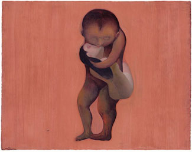
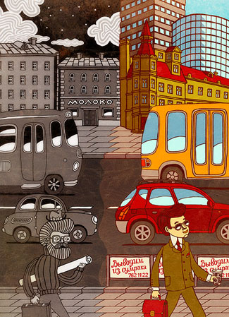
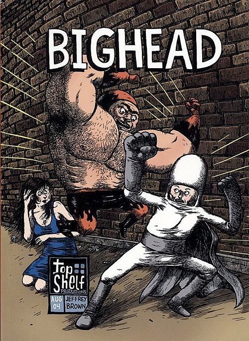
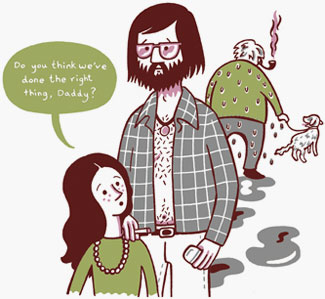

О ХАРАКТЕРЕ
Сыграем в кастинг
Нам с вами повезло жить во времена, когда продукты фирмы Adobe с успехом заместили профессиональные навыки и тщание. Поэтому теперь можно более тщательно присматриваться к более тонким, так сказать, материям. Из всех многообразных позиций, по которым можно оценивать иллюстрацию, я выбираю одну: Жизнь. Уже, правда, говорил об этом, но недоговорил.
Как раз в этом смысле и незаменимо рисование с натуры, ни в коем случае не мертвой и не прикинувшейся мертвой. Только так можно приобрести навык переносить жизнь в рисунок.

Предметы, архитектуру, еду нужно воспринимать как живых — иначе в иллюстрацию только добавляется мертвечины — а это возможно только через ассоциации с человеческой и животной пластикой, растительные ритмы, не знаю, волны — вода тоже бывает живой. Поиграйте в живое-неживое, (вспомните детскую игру «съедобное — несъедобное»?) стукните мячом о каждую деталь на иллюстрации.

Необходимо сделать иллюстрацию обитаемой, населять ее живыми людьми. Делается это просто, в каком бы условном стиле вы ни работали, в момент рисования нужно думать о конкретных знакомых — по каким-то таинственным каналам это до зрителя доходит. В рисунке появляется характер, и с ним — достоверность; характер превращает иллюстрацию из простого сочетания нарисованных фигур в кадр, вырезанный из истории с продолжением.

Не худший способ — всегда рисовать себя. Насчет себя вы, по крайней мере, всегда можете быть уверены, что живы. Так что второй главный инструмент иллюстратора — это зеркало.
В золотые годы моей службы, проведенные в компании Дефа, там была в ходу такая игра: когда кто-то рассказывал о прошедшей встрече, например, с клиентом или любую вообще историю из жизни, на фразе «и тут он говорит», кто-нибудь непременно встревал с ремаркой: «А играет его Борис Щербаков» (предпочтение отдавалось позднесоветскому кино, но звезды Голливуда тоже могли сгодиться), и показывал в меру актерских способностей, как выглядит Борис Щербаков.

Актеры хороши еще тем, что каждый представляет собой некий общий тип — и при этом уникальную личность. Де Ниро в гриме Франкенштейна все равно останется Де Ниро — иначе он не заслуживает своего гонорара.
Это дополнительный труд, но цель оправдывает средства. Особенно это важно как раз в истории с продолжением, на длинной дистанции, в серии, не говоря уже о комиксе — но и разовую вещь очень освежает. Многофигурная композиция требует тщательного кастинга. И вдобавок приходится следить, чтобы никого из актеров по дороге не утрясло насмерть.